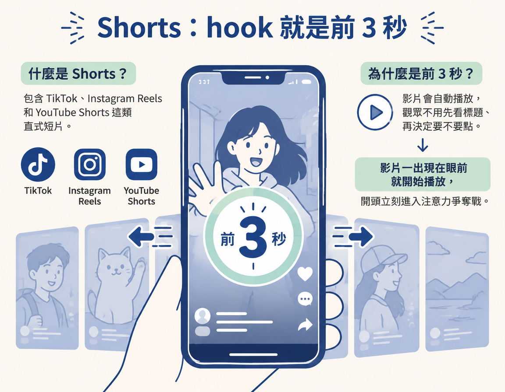
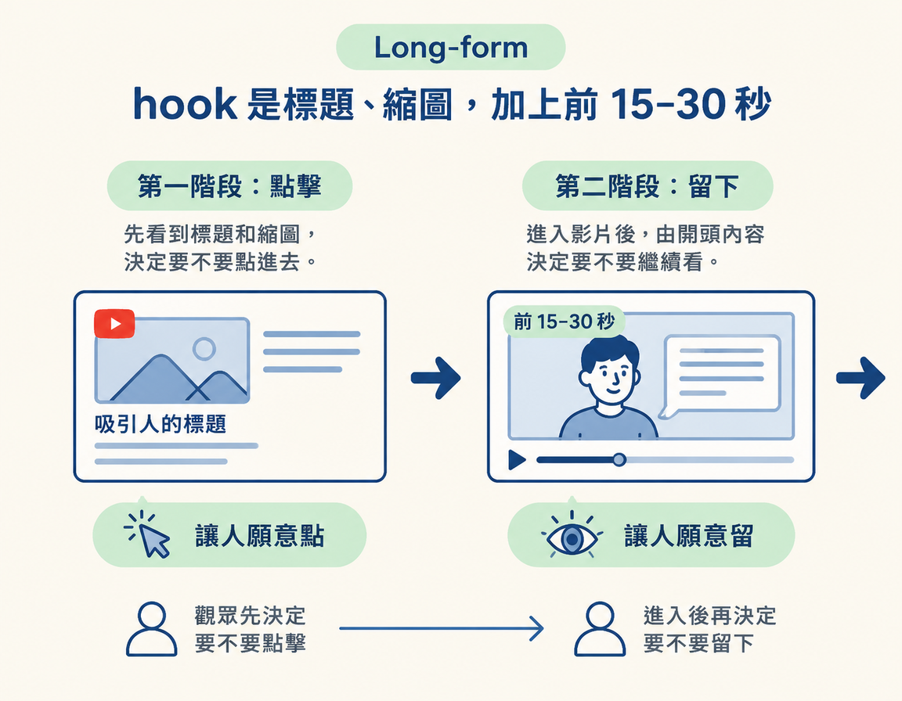

分辨 Shorts 和 Long-form 各自的 hook 是什麼，並了解為什麼課程建議先從 Shorts 開始練習。
上一節提到，hook 就是影片開頭用來抓住注意力的鉤子，它的任務只有一個：讓對的人知道為什麼現在要在意。這一節要把這個概念放回內容製作流程裡：先確定影片要發在哪種格式，再用對應的標準檢查開頭。
你需要準備的，是一支要發布的影片或腳本。完成後，就能知道該檢查前 3 秒，還是標題、縮圖和影片開頭。如果拿錯格式的標準來寫 hook，就像穿錯鞋跑步，努力了半天，方向卻不對。
先看短影音。課程所說的 Shorts，包含 TikTok、Instagram Reels 和 YouTube Shorts 這類直式短片。在這些平台上，hook 基本上就是影片的前 3 秒。
為什麼要盯緊這 3 秒？因為影片會自動播放。觀眾不用先看標題、再決定要不要點，影片一出現在眼前就開始播放，開頭立刻進入注意力爭奪戰。因此，Shorts 的 hook 必須在影片開跑後的前幾秒抓住觀眾。

再看長影片。課程所說的 Long-form，主要是 YouTube 上的長片。這裡的 hook 不是單一開場，而是一整組：標題、縮圖，以及觀眾點進影片後最前面的 15 到 30 秒。
這是因為觀眾會分兩個階段決定要不要看下去。點進影片前，先看到標題和縮圖，進入影片後，才由開頭內容決定要不要留下來。所以，標題和縮圖負責「讓人願意點」，前 15–30 秒則負責「讓人願意留」。

| 格式 | 主要平台 | hook 是什麼 | 為什麼 |
|---|---|---|---|
| Shorts | TikTok、Instagram Reels、YouTube Shorts | 影片的前 3 秒 | 影片自動播放，第一幀就開始搶注意力 |
| Long-form | 主要是 YouTube | 標題＋縮圖＋前 15–30 秒 | 先靠標題與縮圖吸引點擊，再靠影片開頭留住觀眾 |
課程兩種格式都會教，但建議初學者先從 Shorts 開始。不是因為 Shorts 比較高級，而是它適合用來練習穩定產出，逐步養成持續發文的習慣。
另一個原因是，練習 Shorts 開頭時學到的句型，大多也能轉用到 Long-form。相較之下，如果一開始就卡在 Long-form 的標題和縮圖上，可能會因為門檻太高，遲遲沒有發布內容。
寫完腳本後，先確認它要發布成 Shorts 還是 Long-form。若是 Shorts，就檢查前 3 秒能不能抓住人。若是 Long-form，就分別檢查標題和縮圖能不能吸引點擊，以及影片開頭 15–30 秒能不能留住觀眾。這樣，你就能明確看出腳本該先修改哪一部分。
hook 的位置會隨影片格式改變。Shorts（TikTok、Instagram Reels、YouTube Shorts）的 hook 是影片前 3 秒，因為影片自動播放，第一幀就開始爭取注意力。Long-form（主要是 YouTube）的 hook 則包括標題、縮圖和影片最前面 15–30 秒：標題與縮圖讓人願意點進來，開頭則讓人願意留下來。課程兩種格式都會教，但建議先從 Shorts 練起，建立產出和發文習慣。練出的開頭句型，大多也能轉用到 Long-form。
現在你已經知道 hook 要放在哪裡，也知道不同格式要檢查什麼。下一節會介紹九種現成的 hook 句型，讓你不用每次都從零構思開頭，可以先選一個骨架，再填入自己的內容。